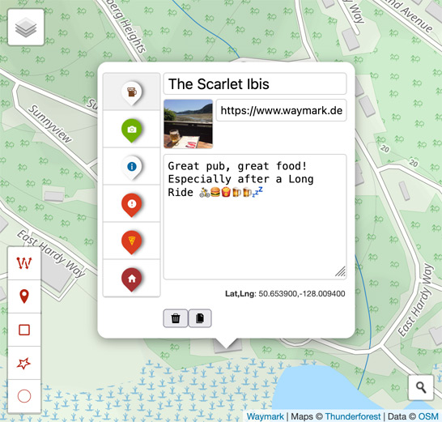

Open GIS is a collection of Open-Source Mapping tools.
My goal is to provide free, powerful web applications that make Mapping easy and accessible.
To do this, I am learning how to make an Open-Source project sustainable and figure out a way to get paid for my time working on it.
What is Open-Source Software?
Open-Source software is software that anyone can view, use, and modify. Including for commercial purposes.
Instead of being controlled by one company, the code is shared publicly so that individuals, communities, and organizations can collaborate, improve it, or build on it. This open approach is the foundation of much of the modern Internet.
Many of the tools and technologies behind the websites, apps, and services we use every day are built on Open-Source software. For example, the Android operating system, the Firefox and Chrome browsers, and even the basic building blocks of websites (like HTML, CSS, and JavaScript) rely heavily on Open-Source contributions.
Without Open-Source software, the web as we know it wouldn’t exist.
Open-Source software is not just about free software; it’s about freedom of choice, collaboration, and innovation. It allows anyone to contribute, learn, and benefit from the collective knowledge and creativity of the global community.
About Joe
 Thanks to Open-Source software, I have been building things for the
web both for fun and professionally since 1997. I run an eBay
advertising service called
Auction Nudge and work on
Open-Source software. Currently the former pays for the later.
Thanks to Open-Source software, I have been building things for the
web both for fun and professionally since 1997. I run an eBay
advertising service called
Auction Nudge and work on
Open-Source software. Currently the former pays for the later.
Open-Source technologies have empowered me (and many others) to create and run my own business with almost no startup costs. Using the generosity of others to create value for others and a living for myself. This is a very powerful concept.
In my spare time I enjoy outdoor activities (especially cycling) and my love of the outdoors is what started my journey into GIS.
The Master Plan
Getting paid to work "for free".
Being creative, tackling interesting problems and building things that add value for others.
So far, while I have received a lot of positive feedback, the project is far from financially sustainable. While I believe in the value of Open-Source, the project can only continue if I can figure out an income stream.
By following my interests in this field, and by learning through doing, I have developed a broad understanding of GIS technologies on the web. By doing this in the open, my software products are gather a small, but loyal userbase.
Progress
Waymark
An Open-Source WordPress plugin to easily create, edit and share meaningful Maps.

- Goals: Figure out how to create and support a popular Open-Source WordPress plugin that makes the experience of creating Maps an intuative and easy on.
- Progress: 1,000+ users, Open-Source participation, and a growing community.
Using the popular Leaflet library, the plugin allows users to create and edit Maps with an intuitive interface. Users can add Overlays (Markers, Lines & Shapes) to their Maps and style them using Types. Waymark uses OpenStreetMap as the default Basemap.
The plugin has approximately 1000 users, and all sorts of use-cases (from dog walks to transport maps). Users can be grouped as either:
- Personal websites, bobbyists and bloggers
-
Organisations:
-
Activities (e.g.
hike/run/bike/kayak/skate/motorcycle)
- Races/events
- Clubs/groups/organisations
- Trail organisations and associations
-
Tourism
- Communities (cCities/towns/villages)
- Tour Guides
- Travel blogs
- Transport (e.g. public bus/train)
-
Activities (e.g.
hike/run/bike/kayak/skate/motorcycle)
The WordPress plugin is written in PHP and JavaScript. I released the JavaScript Editor/Viewer code as a seperate Open-Source project called Waymark JS, which means Waymark can be used by anyone, not just WordPress users.
Waymark JS
A JavaScript library for creating and editing Maps.
It includes a Map Editor, Viewer and a set of Types that can be used to add meaning to Overlays.
The Editor
The Editor runs in your web browser and allows you to:
- Import data from various formats (GPX, KML and GeoJSON)
- Create Overlays (Markers, Line & Shapes) using the intuitive interface
- Add meaning to your Maps by styling Overlays using Types
- Export your Maps to save them offline, including your custom Types.
No account or API key is required to use the Editor and Maps are stored in your browser's local storage.
Open GIS
The Open GIS Editor is a web-based Map Editor that uses Waymark JS to create and edit Maps. It runs in the browser and allows users to create and share Maps without needing to install any software.
inReach MapShare is a WordPress plugin to display your live inReach MapShare Data.
Lessons so Far
Running an Open-Source Project
Gathering experience with Github, by running a project in the open.
The next stage is creating a product or service people are willing to pay for.